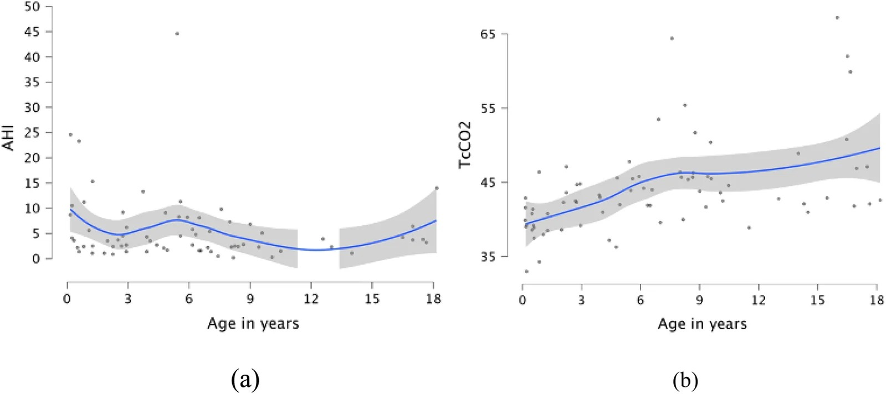
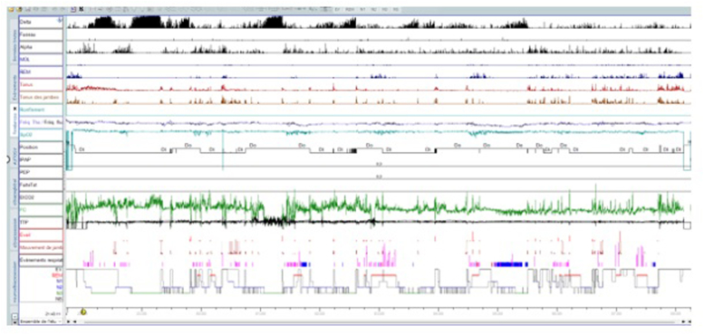
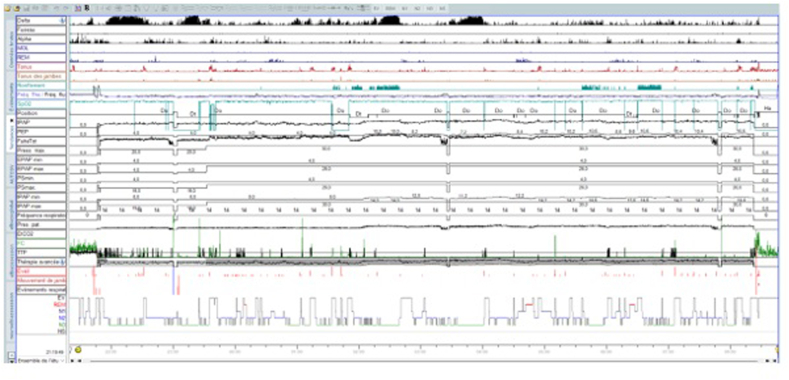

1830 — OSA và rối loạn thở khi ngủ ở trẻ Prader–Willi / Sleep-disordered breathing in Prader–Willi syndrome
Tags: pattern:ngung-tho-khi-ngu pattern:gia-dam-thong-khi vung:duong-tho-tren vung:hau-mieng score:AHI score:TcCO2 protocol:PSG protocol:capnometry protocol:NIV
Mức chắc chắn (certainty): tổng hợp y văn (literature synthesis) — tổng hợp y văn mở, đối chiếu PMCID (Europe PMC): Basa M, Front Pediatr 2026, PMC13662172; Bouhamdi A, Respir Med Case Rep 2025, PMC12590233; Butler MG, Curr Pediatr Rev 2019, PMC7040524; Alsaffar H, Front Endocrinol (Lausanne) 2026, PMC13503540. Số chưa kiểm chứng ghi "chưa rõ".
Bài này trả lời "vì sao trẻ Prader–Willi ngáy/ngưng thở mà AHI bình thường vẫn nguy hiểm": ở hội chứng này có ba kiểu rối loạn chồng lên nhau — trung ương, tắc nghẽn và giảm thông khí — và kiểu thay đổi theo tuổi. OSA tồn dư sau cắt amidan–VA ở trẻ Down/béo phì ở 1812; OSA ở trẻ bệnh phổi mạn ở 1803; theo dõi dài hạn sau tăng áp phổi ở 1802.
1. Tổng quan bệnh học – cơ chế hình ảnh
- Bệnh nền: Prader–Willi (PWS) do mất biểu hiện gen phía cha ở 15q11–q13: deletion ~60%, maternal UPD ~35%, khiếm khuyết imprinting 1–3%; tần suất 1/10.000–1/30.000 trẻ sinh sống (Alsaffar H 2026, PMC13503540; Bouhamdi A 2025, PMC12590233). Rối loạn chủ đạo là suy chức năng vùng dưới đồi → thiếu GH, giảm trương lực cơ, cuồng ăn, béo phì, giảm kiểm soát hô hấp.
- Vì sao hô hấp là nguyên nhân tử vong hàng đầu: trong khảo sát nguyên nhân tử vong ở PWS, suy hô hấp 31%, tim 16%, tiêu hóa 10%, nhiễm trùng 9%, béo phì 7%, thuyên tắc phổi 7% (Butler MG 2019, PMC7040524). Tức là gần 1/3 tử vong do hô hấp — không phải biến chứng phụ.
- Ba cơ chế — TẠI SAO hình ảnh/PSG lại có ba kiểu khác nhau:
- Trung ương (central): giảm đáp ứng với tăng CO₂ và giảm O₂ do rối loạn vùng dưới đồi, độc lập với yếu tố cơ học; trẻ nhỏ thở chu kỳ (periodic breathing), ngưng thở trung ương nhiều hơn khi REM và desaturation nặng hơn trong REM (Bouhamdi A 2025, PMC12590233).
- Tắc nghẽn (obstructive): giảm trương lực cơ hầu + phì đại amidan/VA + béo phì + bất thường sọ mặt (retrognathia, vòm miệng cao) → hẹp nhiều tầng; nặng hơn khi mất trương lực cơ ở REM.
- Giảm thông khí (hypoventilation): béo phì làm giảm compliance thành ngực + giảm đáp ứng trung ương → CO₂ tăng dần, thường ở trẻ lớn/dậy thì, và có thể không có AHI cao.
- Diễn tiến theo tuổi (số liệu dọc): 29 trẻ PWS, 70 lần polygraphy + 75 lần capnometry; trung vị tuổi chẩn đoán gen 10,5 tháng nhưng tuổi PSG đầu tiên 32,5 tháng (p < 0,001) — trễ trung bình ~2 năm; 16/29 (55%) cần can thiệp; trung ương chiếm ưu thế tuổi nhỏ, tắc nghẽn tuổi mẫu giáo/học đường, giảm thông khí tuổi lớn/dậy thì (Basa M 2026, PMC13662172).
- Ngưỡng định lượng cần nhớ (theo bài gốc):
- Ngưng thở trung ương: chỉ số cAI > 5 sự kiện/giờ là ngưỡng trung tâm này cân nhắc oxy; nhóm trung ương có cAI trung vị 4,8 (IQR 3,1–6,4) lúc bắt đầu điều trị.
- Giảm thông khí: TcCO₂ > 50 mmHg trong > 2% tổng thời gian ngủ (định nghĩa AASM qua capnometry); nhóm giảm thông khí có TcCO₂ trung vị 62 mmHg (IQR 50,8–64,4).
- Tắc nghẽn: nhóm được cắt amidan–VA có AHI trung vị 10,3 (6,25–14,8); chỉ định phẫu thuật khi AHI > 10, hoặc AHI 5–10 kèm triệu chứng (ngáy, thở miệng, vã mồ hôi, ngủ ngày) hoặc SpO₂ nadir < 80% / T90 > 2% (Basa M 2026, PMC13662172).
- Hypopnea trên polygraphy (không có kênh thần kinh): giảm luồng ≥ 30% + giảm SpO₂ ≥ 3%.
- Vì sao "chỉ số ngưng thở" không đủ: triệu chứng chỉ có ở 12/29 (41,4%); không bệnh nhân trung ương nào có triệu chứng. Có triệu chứng làm tăng khả năng cần điều trị OR 14,0 (95% CI 1,8–124,7), nhưng vắng triệu chứng không loại trừ giảm thông khí. Đây là lý do phải đo CO₂ qua đêm, không chỉ đếm AHI (Basa M 2026, PMC13662172).
- Vai trò hình ảnh (không thay PSG): PSG trả lời có rối loạn và kiểu gì; hình ảnh trả lời tắc ở đâu — sọ mặt nghiêng/CBCT (retrognathia, vòm cao, hẹp mũi hầu), CT/MRI đánh giá amidan–VA và đường thở, nội soi đường thở khi ngủ do thuốc (DISE) cho tắc nhiều tầng, siêu âm tim tìm tăng áp phổi khi giảm thông khí nặng.
2. Mẫu hình + chẩn đoán phân biệt theo vị trí (gamut)
- Theo kiểu hình (quyết định điều trị):
- Trung ương – nhũ nhi: thở chu kỳ, ngưng thở trung ương, desaturation nặng trong REM, không ngáy; có thể kèm trào ngược.
- Tắc nghẽn – mẫu giáo/học đường: ngáy, thở miệng, ngủ ngày, phì đại VA/amidan; AHI tăng.
- Giảm thông khí – trẻ lớn/dậy thì/béo phì: ngủ ngày, đau đầu sáng, CO₂ tăng, AHI có thể thấp; nguy cơ tăng áp phổi và suy tim phải.
- Theo mức tắc nghẽn (khi cần DISE/hình ảnh): mũi hầu (VA) · khẩu cái (amidan, vòm mềm) · đáy lưỡi · nắp thanh môn · đa tầng (thường gặp ở PWS + béo phì).
- Gamut "trẻ ngáy + ngủ ngày": PWS · Down · béo phì đơn thuần/OHS · phì đại VA–amidan · hẹp sọ mặt (Pierre Robin, achondroplasia) · CCHS (trung ương) · động kinh/trào ngược · thiếu sắt.
- Gợi nhớ PWS-SLEEP: Phì đại VA/amidan, Weight (béo phì), Sọ mặt hẹp, Suy giảm trương lực cơ, Loop gain cao (thở chu kỳ), Endocrine (thiếu GH), Extra CO₂ (giảm thông khí), Periodic breathing.
3. Bảng so sánh phân biệt (ma trận đối chiếu)
| Thực thể (entity) | Hình ảnh/PSG điển hình | Chốt vào (rule-in) | Chốt loại (rule-out) | Gợi ý xác nhận |
|---|---|---|---|---|
| PWS – trung ương (nhũ nhi) | Thở chu kỳ; cAI tăng, ngưng thở trung ương nhiều ở REM, desaturation nặng; không tắc nghẽn | PWS + cAI > 5 + không có tắc nghẽn + desat trong REM | AHI tăng do tắc nghẽn thuần + phì đại VA rõ = kiểu tắc nghẽn | PSG/polygraphy + TcCO₂; theo dõi 6–12 tháng |
| PWS – tắc nghẽn (mẫu giáo) | Ngáy + thở miệng; AHI 10,3 (6,25–14,8); VA/amidan to; giảm sau cắt | AHI > 10 hoặc 5–10 kèm triệu chứng + VA/amidan to | cAI chiếm ưu thế, không ngáy → kiểu trung ương | PSG; DISE nếu đa tầng; đánh giá lại sau 6–8 tuần |
| PWS – giảm thông khí (lớn/dậy thì) | TcCO₂ 62 mmHg (50,8–64,4); AHI chỉ 5,75 (4,05–7,92); BMI cao; ngủ ngày | TcCO₂ > 50 mmHg > 2% thời gian ngủ — kể cả AHI thấp | TcCO₂ bình thường + AHI thấp + không triệu chứng = chưa có chỉ định NIV | Capnometry bắt buộc; siêu âm tim; khí máu |
| Down + OSA | Hẹp mũi hầu, lưỡi to, giảm trương lực; AHI cao, tồn dư sau cắt 54–68% | Down + hẹp đa tầng + AHI tồn dư sau AT | PWS có kiểu trung ương + giảm thông khí chiếm ưu thế | PSG lặp; DISE (xem bài 1812) |
| CCHS (PHOX2B) | Ngưng thở trung ương chủ yếu NREM, không tắc nghẽn, không đáp ứng CO₂ | Ngưng thở trung ương khi thức/NREM + gen PHOX2B | Có tắc nghẽn + ngáy → không phải CCHS thuần | PSG + xét nghiệm gen; khởi phát sơ sinh |
| Béo phì – OHS | BMI rất cao; CO₂ ngày tăng, AHI có thể thấp hoặc cao | BMI cao + PaCO₂ ngày > 45 mmHg | CO₂ bình thường, chỉ tắc nghẽn = OSA đơn thuần | Khí máu + PSG + capnometry |
| Phì đại VA–amidan đơn thuần | Amidan/VA to, AHI tăng, hết sau cắt | Trẻ khỏe + VA/amidan to + AHI giảm rõ sau AT | AHI không giảm/giảm ít + đa tầng = nghĩ PWS/Down | PSG trước–sau; DISE |

Scatterplot + LOESS: ngưng thở có hai đỉnh (trung ương ở tuổi nhỏ, tắc nghẽn ở tuổi mẫu giáo/học đường), trong khi TcCO₂/giảm thông khí tăng dần ở trẻ lớn — hai quỹ đạo không song hành. Nguồn: Basa M et al., Front Pediatr 2026, Fig. 1 — CC BY 4.0.Ba câu hỏi phải trả lời trước khi kết luận "OSA"
- Có tắc nghẽn thật không (ngáy + AHI + VA/amidan) hay chỉ thở chu kỳ/trung ương?
- Có giảm thông khí không (TcCO₂ > 50 mmHg > 2% thời gian ngủ), dù AHI thấp?
- Kiểu hình có đổi theo tuổi không — trẻ nhỏ trung ương, lớn hơn tắc nghẽn, dậy thì giảm thông khí?
4. Protocol + điều trị theo kiểu hình
- PSG/polygraphy chuẩn AASM nhi: đếm hypopnea theo giảm ≥ 30% luồng + desat ≥ 3% (khi không có EEG); bắt buộc kèm capnometry qua da (TcCO₂) để bắt giảm thông khí — đây là điểm khác biệt cốt lõi so với PSG OSA thông thường.
- Lịch theo dõi (thực hành trong loạt): đánh giá hằng năm cho mọi trẻ PWS; mỗi 6 tháng nếu đang oxy/NIV; PSG trước khi khởi trị GH ở trẻ > 2 tuổi vì GH có thể làm nặng OSA ở trẻ lớn, và ở nhũ nhi PSG trước + sau 3 tháng điều trị (Butler MG 2019, PMC7040524). Trong loạt Basa: GH khởi trị trung vị 31 tháng, tạm ngừng 1 ca vì phì đại VA + OSA nặng (hồi phục sau mổ), ngừng vĩnh viễn 4 ca vì béo phì nặng + giảm thông khí cần NIV.
- Điều trị theo kiểu hình:
- Trung ương: oxy lưu lượng thấp khi cAI > 5 (khởi trị trung vị 15,5 tháng, kéo dài 21 tháng); nếu xấu đi → acetazolamide (ca cAI 9,6 → 42,5/giờ sau 6 tháng oxy, giảm 11,5 sau 1 tháng và 0,5 sau 12 tháng acetazolamide).
- Tắc nghẽn: cắt amidan–VA (trung vị 44,5 tháng); AHI 10,3 → 5,8 sớm và 0,6 dài hạn; 5/6 khỏi, 1 tồn dư + giảm thông khí → NIV.
- Giảm thông khí ± tắc nghẽn: NIV hai mức áp lực (BiPAP); nhóm này lớn hơn nhóm cắt amidan (trung vị 172 tháng, p = 0,04), BMI là yếu tố dự báo cần NIV OR 19,65 (1,24–311,46).
- CPAP cho OSA trung bình–nặng không giảm thông khí; tuân thủ kém: trong Global PWS Registry < 50% người được kê CPAP dùng đúng hoặc dùng chút nào (Butler MG 2019, PMC7040524).
- Lưu ý về "loop gain" cao: CPAP cố định có thể không xóa hết ngưng thở trung ương (ca minh họa: CPAP 7 cmH₂O kiểm soát tắc nghẽn nhưng còn sự kiện trung ương ngắn); auto-SV kiểm soát tốt hơn, sau đó CPAP cố định 6 cmH₂O ổn định lại (Bouhamdi A 2025, PMC12590233). Đây là kinh nghiệm ca, chưa phải khuyến cáo chuẩn cho trẻ.
flowchart TD
A[Trẻ Prader-Willi: ngáy, ngủ ngày hoặc chậm tăng cân] --> B[PSG hoặc polygraphy + TcCO₂]
B --> C{Có giảm thông khí?}
C -->|TcCO₂ trên 50 mmHg hơn 2% thời gian ngủ| D[NIV hai mức áp lực + giảm cân + theo dõi 6 tháng]
C -->|Không| E{Có tắc nghẽn?}
E -->|AHI trên 5 + VA/amidan to| F[Cắt amidan-VA khi AHI trên 10 hoặc 5-10 kèm triệu chứng]
F --> G[PSG lại sau 6-8 tuần]
G -->|Còn AHI cao| H[CPAP hoặc DISE đánh giá đa tầng]
E -->|Không| I{Có ngưng thở trung ương?}
I -->|cAI trên 5| J[Oxy lưu lượng thấp; acetazolamide nếu thất bại]
I -->|Không| K[Theo dõi hằng năm + đánh giá lại khi tăng cân]
D --> L[Kiểm tra lại TcCO₂ + tuân thủ]
5. Biến thể bình thường và cạm bẫy
- Thở chu kỳ ở nhũ nhi có thể là sinh lý; ở PWS, mức độ và desaturation trong REM mới là điều quyết định — đừng quy mọi "thở chu kỳ" cho sinh lý.
- Cạm bẫy số 1 — "AHI bình thường nên không sao": nhóm giảm thông khí có AHI trung vị chỉ 5,75 nhưng TcCO₂ 62 mmHg; bỏ capnometry là bỏ sót (Basa M 2026, PMC13662172).
- Cạm bẫy số 2 — "không ngáy nên không ngưng thở": 0/4 ca trung ương có triệu chứng; 41,4% tổng số có triệu chứng. Triệu chứng không dùng để sàng lọc kiểu trung ương/giảm thông khí.
- Cạm bẫy số 3 — CPAP làm lộ ngưng thở trung ương: ở trẻ loop gain cao, áp lực dương có thể làm giảm CO₂ và gây thêm ngưng thở trung ương; nếu AHI tắc nghẽn giảm mà trung ương tăng → giảm áp lực/đổi sang BiPAP–ASV và đánh giá lại.
- Cạm bẫy số 4 — GH: GH cải thiện thành phần cơ thể nhưng có thể làm nặng OSA (phì đại VA, phì đại mô lympho) ở trẻ lớn → PSG trước và sau khởi trị, và tạm ngừng nếu AHI tăng kèm triệu chứng (Butler MG 2019, PMC7040524; Basa M 2026).
- Cạm bẫy số 5 — quy mọi béo phì cho "ăn nhiều": ở PWS, BMI dự báo cần NIV nhưng kiểu gen không dự báo kiểu hình hô hấp (p = 0,363) — không dùng kiểu gen để quyết định theo dõi.
- Cạm bẫy số 6 — bỏ qua tăng áp phổi: giảm thông khí mạn → tăng áp phổi → suy tim phải; siêu âm tim khi TcCO₂ cao/ngủ ngày, đừng chỉ nhìn AHI.
6. Tự lượng giá — Blind Quiz
Ca 1 — Bé gái 10,5 tuổi PWS, BMI 26,1, ngáy + ngủ ngày (Epworth 16). Nhìn PSG trước khi kết luận.

- Gợi ý: bố mẹ không thấy cơn ngưng thở rõ; trẻ vẫn ngủ ngày nhiều.
- Câu hỏi: AHI 31,8/giờ — tắc nghẽn hay trung ương chiếm ưu thế? Vì sao CPAP thường có thể không đủ?
Bấm để hiện đáp án (findings + chẩn đoán)
- Findings: hypnogram có thở chu kỳ, AHI 31,8/giờ, chỉ số trung ương 15,2/giờ, phân mảnh giấc ngủ — kiểu hỗn hợp nhưng trung ương chiếm ưu thế, phù hợp loop gain cao.
- Chẩn đoán: rối loạn thở khi ngủ hỗn hợp ở PWS, không phải OSA đơn thuần.
- Điều trị: CPAP cố định 7 cmH₂O kiểm soát effort nhưng còn sự kiện trung ương ngắn; auto-SV kiểm soát tốt hơn; sau đó CPAP cố định 6 cmH₂O ổn định.
- Nguồn ảnh: Bouhamdi A et al., Respir Med Case Rep 2025, Fig. 5 — CC BY-NC-ND 4.0 (nguyên bản).
Ca 2 — Cùng bệnh nhân, đêm chuẩn độ lại. Nhìn hình và cho biết điều gì thay đổi.

- Câu hỏi: Vì sao chọn auto-SV thay vì tăng áp lực CPAP? Dấu hiệu nào chứng minh hiệu quả?
Bấm để hiện đáp án (findings + chẩn đoán)
- Findings: dưới auto-SV, dao động luồng khí và sự kiện trung ương giảm rõ, đường cong ổn định hơn so với CPAP cố định.
- Chẩn đoán: thất bại một phần của CPAP do kiểu hình trung ương/loop gain cao; auto-SV hỗ trợ nhịp thở khi mất drive trung ương.
- Caveat: đây là kinh nghiệm một ca; auto-SV chưa có khuyến cáo chuẩn cho trẻ — cần PSG kiểm chứng và theo dõi.
- Nguồn ảnh: Bouhamdi A et al., Respir Med Case Rep 2025, Fig. 6 — CC BY-NC-ND 4.0 (nguyên bản).
Ca 3 — Ba trẻ PWS: 8 tháng, 4 tuổi, 15 tuổi. Chỉ nhìn hình quỹ đạo và đoán kiểu hình.
- Câu hỏi: Ở tuổi nào nên tìm ngưng thở trung ương, tuổi nào tắc nghẽn, tuổi nào giảm thông khí? Chỉ số nào không đủ để loại trừ?
Bấm để hiện đáp án (findings + chẩn đoán)
- Findings: tuổi nhỏ — đỉnh ngưng thở trung ương; mẫu giáo/học đường — đỉnh tắc nghẽn (VA/amidan); trẻ lớn/dậy thì — TcCO₂ tăng, giảm thông khí, nhiều khi AHI thấp.
- Chẩn đoán: SDB trong PWS là một continuum, không phải ba bệnh tách rời; vì vậy đánh giá lại theo tuổi và đo CO₂ mỗi lần.
- Chỉ số không đủ: AHI đơn thuần — có thể bình thường/thấp trong giảm thông khí.
- Nguồn ảnh: Basa M et al., Front Pediatr 2026, Fig. 1 — CC BY 4.0.
Bài liên quan chéo
- 1812 – OSA tồn dư sau cắt amidan–VA ở trẻ (Down, béo phì): PSG lặp, DISE, A/N
- 1803 – Ngưng thở khi ngủ tắc nghẽn ở trẻ bệnh phổi mạn
- 1802 – Theo dõi dài hạn sau tăng áp phổi tồn tại (PPHN)
Không dùng để chẩn đoán độc lập khi chưa có người hướng dẫn.